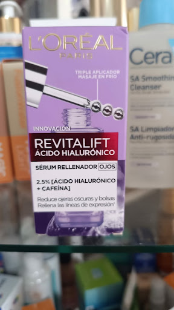
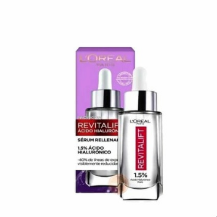
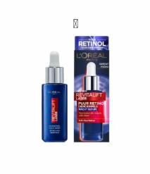

Uso y beneficios: Formulado con un 2.5% de [Ácido Hialurónico + Cafeína]. Hidrata intensamente y rellena las líneas de expresión de la zona ocular, mientras que la cafeína ayuda a revitalizar la piel para reducir ojeras oscuras y bolsas. Incluye un innovador triple aplicador de masaje en frío para desinflamar. Para quiénes: Personas que buscan combatir signos de fatiga, líneas finas y falta de hidratación en el contorno de ojos. Cantidad: 20 ml. Valor: Cuidado avanzado con aplicador ergonómico que potencia los resultados mediante la crioterapia (frío).
Bs 180 Consultar por WhatsApp
Qué es: Un sérum de noche con 0.2% de retinol puro. Categoría: Tratamiento renovador nocturno / Anti-arrugas. Info breve: Actúa durante la noche para combatir arrugas profundas y unificar la textura de la piel. Es un ingrediente potente que requiere uso gradual y protección solar al día siguiente. Cantidad: 30 ml.
Bs 266 Consultar por WhatsApp
Qué es: Un sérum de noche con 0.2% de retinol puro. Categoría: Tratamiento renovador nocturno / Anti-arrugas. Info breve: Actúa durante la noche para combatir arrugas profundas y unificar la textura de la piel. Es un ingrediente potente que requiere uso gradual y protección solar al día siguiente. Cantidad: 30 ml.
Bs 309 Consultar por WhatsApp